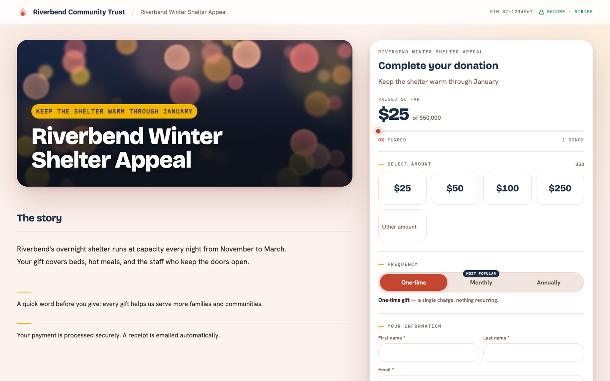

Core Concepts
Donations & payments#
A one-time gift is a standard Opportunity from the moment it's confirmed. Getting from "donor clicked pay" to "Opportunity in Closed Won" happens without a single inbound webhook.
Why no webhooks#
Most payment integrations register a public endpoint with the processor and wait for it to call back. Pledgivo does the opposite: after a donor pays, Salesforce asks Stripe whether the payment succeeded — immediately, via a guest-side poll right after the browser redirect, and again shortly after on a scheduled reconciliation pass as a backup. This removes an entire class of AppExchange security review friction (no public endpoint to secure, no webhook signing secret to store or rotate) at the cost of a payment confirming a few seconds later than an instant webhook would. In practice this is not noticeable to a donor.
The flow#
sequenceDiagram
participant Donor
participant Form as dfForm (guest, LWR)
participant Apex as DonationService
participant Stripe
participant Staging as Donation_Staging__c
participant Recon as StagingReconciliationBatch
Donor->>Form: Fills amount, info, submits
Form->>Apex: createDonorAndIntent()
Apex->>Stripe: Create PaymentIntent
Apex->>Staging: Insert staging row (no Opportunity yet)
Form->>Stripe: Confirm payment (Stripe.js, in iframe)
Stripe-->>Donor: Redirect to /thank-you?access=…
Form->>Apex: checkPaymentStatus() / checkStagingPaymentStatus()
Apex->>Stripe: Retrieve PaymentIntent
Apex->>Staging: finalizeSucceededStaging() → creates Opportunity
Recon->>Stripe: Backup sweep, catches anything the poll missedA Donation_Staging__c row exists between "donor started paying" and "payment confirmed" —
there is deliberately no Opportunity yet at that point, so an abandoned or failed payment
never creates a donation record. Finalization is idempotent: it's keyed on
Opportunity.Stripe_Payment_Intent_Id__c, so a guest poll and the backup batch racing each
other can never create two Opportunities for the same payment.
What the donor sees#

**What it shows.** A live public donation form — amount tiles with a custom-amount input, a One-time/Monthly/Annually frequency toggle, fund designation and split-gift options, donor info fields, tribute/dedication and employer-match blocks, and a sticky gift summary sidebar with "Secure & encrypted" / "Powered by Stripe" trust badges. This is the Compose step described in [Campaigns](campaigns.md) rendered for a guest.
After the gift — the confirmation page#
The moment a payment clears, the donor is sent to /thank-you — a real page on its own
route, not a step inside the form.
That distinction is the whole point. A step change inside the form leaves the browser sitting on
/donate?slug=…, so a completed gift looks exactly like an abandoned one and no analytics tool
can tell them apart. A route produces a distinct URL, and therefore a distinct pageview, at the
moment of conversion.
There is no analytics tag to install. The package ships no SDK, no tracking script and no
settings field for one. You wire up Google Analytics through Experience Builder's own setting and
count /thank-you as your goal. That is the entire mechanism.
The page can be reached two ways:
| Link | What it is |
|---|---|
/thank-you?token=… |
The durable link. Bookmarkable, shareable, and what the receipt email points at. |
/thank-you?access=… |
The hand-off used the instant a payment clears, while the gift is still being written. |
The donation record is written by a background job that runs every five minutes, so a donor arriving
on the ?access= link normally gets there before the record exists. They still see the whole
confirmation — seal, greeting, amount, impact line, event date and venue, the fund they chose,
what happens next, share links and the campaign's own call to action. All of it was decided at
checkout, so the page renders it from the checkout itself rather than waiting for the record.
Only two things genuinely cannot exist yet: the link to the full receipt, and the per-seat ticket
codes. In their place the page shows one quiet line — "Your receipt and tickets are on their way to
you@example.com." — and nothing else changes. The page keeps checking for about two minutes and
fills those sections in where they stand, then swaps the address bar to the durable ?token= link
on its own. There is no spinner and no holding message, because the donor has nothing to wait for.
If the donor closes the tab before it fills in
Nothing is lost. The payment is already captured, and the receipt email always arrives with a
working ?token= link that resolves immediately. Reloading the ?access= link works too.
For an event order, the page also carries the tickets. A donor who bought five seats sees one
ticket and a count rather than five full cards — See all 5 tickets expands the stack. Each seat carries a
scannable code for its own ticket reference; a refunded seat carries none and is marked
not valid for entry.
Controlling which funds a donor can pick#
A campaign's Designation_Mode__c field decides how much choice the donation form gives a
donor over which Designation__c (fund) their gift lands in. It is set from the Fundraisers
console (lexFundraisersConsole) and has three values:
- All Active — the donation form shows every active fund in the org. No further configuration needed.
- Assigned — every gift on this campaign is locked to a single fund
(
Default_Designation__c). The fund picker doesn't render at all — there's nothing for the donor to choose, so the form skips straight past it. - Selectable — the donor sees a picker scoped to an admin-chosen subset of funds
(
Allowed_Designation_Ids__c), pre-selected toDefault_Designation__cwhen it's one of the offered funds.
Always set the mode explicitly — don't rely on a default
The picklist declares Assigned as its default value, but that is not what an Apex or
API insert actually lands on. A Campaign inserted without a RecordTypeId gets the
Fundraising record type, which declares no picklist assignment for this field, so the
platform supplies the first available value — All Active — and the declared default
never applies. A campaign that ends up with the field genuinely blank also resolves to
All Active, deliberately: an unconfigured campaign should not be silently narrowed to a
single fund. The practical rule is that the wizard, the seed scripts, and any integration
must set Designation_Mode__c explicitly rather than trusting either default. There is no
validation rule enforcing this — the fundraiser wizard's own save guards are the only
place a blank mode is blocked.
CampaignDesignationService.resolveDesignationConfig() is the single place this is resolved,
and it fails safe rather than fails loud: if an allowed fund was later deactivated or deleted,
it's silently dropped from the list rather than breaking the donation page; if every configured
fund turns out to be invalid, the campaign falls back to the org-wide default fund
(Settings__c.Default_Designation__c) and finally to an undesignated gift. A donor never sees
an error because of stale fund configuration — worst case, the picker just offers fewer choices
than intended, which is a config problem for an admin to notice and fix, not something that
should ever block a gift. The same resolved scope is enforced server-side on submit
(DonationService/RecurringDonationService), so a donor can't submit a fund outside the
configured scope by tampering with the client.
How a fund is actually doing#
The fund's own record page carries a Fund Performance card: what it has raised, across how many gifts, at what average, which campaigns brought the money in, and — where there are live recurring gifts pointed at it — what those commit to over a year.
Its headline figure is net raised: each gift's split minus that split's share of any refund against the parent gift. That is deliberately not the same number as the Total Raised rollup in the record's own fields, which is gross and refund-blind. On a fund that has never been refunded the two agree. On one that has, they won't, and the card states the refunded total on its own line so the gap reads as the explanation rather than as a bug.
If you are reconciling a fund against a report, the question to settle first is which of the two numbers the report is using.
Where the payment reference lives#
Payment_Method__c is for recurring gifts only
A one-time donation stores its Stripe reference directly on the Opportunity —
Stripe_Payment_Intent_Id__c, Payment_Source__c, Payment_Status__c, and
Payment_Account__c. It does not relate to Payment_Method__c.
Payment_Method__c exists only to let RecurringDonationService reuse a donor's saved
card for future off-session charges. It relates to Recurring_Donation__c and to the
donor (Contact__c / Donor_Account__c) — never to an Opportunity. If you're
building a report or a trigger that needs a one-time gift's payment details, read them
off the Opportunity fields, not through Payment_Method__c.
| Field (on Opportunity) | Holds |
|---|---|
Stripe_Payment_Intent_Id__c |
The Stripe PaymentIntent id — the idempotency key for finalization |
Payment_Source__c |
How the gift was collected (public form, staff-entered, embed widget, etc.) |
Payment_Status__c |
Current payment state, kept in sync by reconciliation |
Payment_Account__c |
Which connected Payment Account the gift settled to |
Recurring_Donation__c |
Populated only when this Opportunity is a renewal charge from a Recurring Donation |
Marketing attribution — where a gift came from#
Every checkout surface captures the query string of the URL the donor arrived on and stamps it onto the gift. There is nothing to set up: put whatever tracking parameters you like on a link and they land on the donation record.
The five standard UTM parameters get their own reportable fields on the Opportunity, so you can group and filter on them in any report:
| Field (on Opportunity) | From the URL |
|---|---|
UTM_Source__c |
utm_source — where the click came from (newsletter, facebook) |
UTM_Medium__c |
utm_medium — the channel (email, cpc, social) |
UTM_Campaign__c |
utm_campaign — your marketing campaign name |
UTM_Term__c |
utm_term — the paid-search keyword |
UTM_Content__c |
utm_content — which creative or link variant was clicked |
URL_Parameters__c |
Everything else that survived filtering, as JSON — gclid, fbclid, partner ids, and any custom tag you invent |
This works on the donation form, event registration, recurring signups, and the embed widget. The widget forwards the query string of the page it is embedded on, so a widget dropped onto a UTM-tagged landing page still attributes correctly.
Recurring gifts record acquisition, not last touch
A Recurring Donation is stamped once, at signup, and never refreshed — it answers "how did we acquire this monthly donor?" Each renewal installment inherits that same attribution, because a renewal is charged by a scheduled job where no URL exists.
What is deliberately not captured
Functional and personal parameters are stripped before anything is written: the page's own
state (slug, amount, designation), anything identifying (email, name, phone), and
anything credential-like (token, and Stripe's payment_intent / client_secret redirect
parameters). Attribution data is reportable and widely visible — payment credentials and donor
PII must never end up there. Capture is also capped at 50 parameters and 4 KB per gift.
Card and ACH#
The Stripe Payment Element handles both card and US bank account (ACH) payment methods in the same embedded UI — Pledgivo doesn't build separate flows for each. ACH payments settle on a delay; the receipt page and donor communications reflect a pending state until Stripe confirms funds have cleared.
When the donor covers the processing fee#
Every card charge costs you a percentage plus a flat amount, so a $100 gift arrives as rather less than $100. A campaign can offer donors the chance to make up that difference: tick Let donors cover processing fees on the campaign, and its public form grows a checkbox inviting the donor to add the fee on top.
The campaign flag is the only thing that turns this on. There is deliberately no org-wide on/off switch — an appeal where the ask is delicate can simply leave it off, and a form that was never offered the option cannot have coverage applied to it even if a request claims otherwise. The browser only ever sends "the donor ticked the box"; Apex re-reads the campaign flag and recomputes the amount itself, so the figure the donor sees is a display estimate and the figure charged is the server's.
The maths is a gross-up, not a surcharge. Adding 2.9% of $100 gives $102.90 — but the
processor then takes 2.9% of $102.90 plus 30¢, and you land at $99.71. To actually net the
$100, the charge has to be (gift + fixed) ÷ (1 − percent), which for the US card standard is
$103.30. That is what the donor is shown and what the card is charged.
Your processor's actual rate lives in General → Organization → Processing fee, as a
percentage and a fixed amount. Leave either blank and the packaged US card standard (2.9% +
$0.30) applies; enter 0 in the fixed field if your processor genuinely charges no flat fee.
The rate is only ever consulted to work out what to add — it never changes what a donor who
declines coverage is charged, and it is not a record of what Stripe actually deducted.
On the resulting Opportunity: Amount is the full $103.30 that was charged, Fee Amount is the $3.30 the donor added, and Donor Covered Fees is ticked for reporting. Fund designations and split gifts allocate the gift — $100 — because the remaining $3.30 was never yours to allocate; it goes to the processor.
For a monthly or annual gift the choice is stored on the schedule, not baked into the amount: the schedule's Amount stays at the $100 the donor chose, and each renewal re-grosses it using whatever the fee rate is that month. If your processor's rate changes, you update it in one place and every covered recurring donor's next charge follows — nothing drifts, and no donor's coverage silently stops after the first gift.
Event and ticket orders never offer coverage, regardless of the campaign flag.
What the processor actually kept#
The Amount on a gift is what the donor was charged. It is not what you received. Stripe takes its cut before the money reaches your balance, and the two figures are never the same.
Every gift now records the difference, in the Stripe / Gateway section of the donation layout:
| Field | Holds |
|---|---|
| Processor Fee | What the processor kept on this charge |
| Net Settled Amount | What actually reached your balance |
| Funds Available On | The date those funds become withdrawable |
| Balance Transaction ID | The processor's reference for this settlement line |
Nothing to switch on. The figures arrive on the same call that confirms the payment succeeded, so they cost you no extra processing and appear on one-time gifts, ticket orders, and every monthly renewal alike — a monthly donor pays a fee every month, so each installment carries its own.
All four are read-only. They are what the processor reported; editing them by hand would make the record disagree with the dashboard it exists to reconcile against.
Blank is not zero
A gift shows Processor Fee blank when the charge hasn't settled yet — an ACH debit still clearing, or a card gift finalized in the same second it succeeded. That is normal, and it is not a fee of $0. If you sum this column in a report, blank rows are gifts whose cost isn't known yet, not free ones. They stay blank; nothing backfills them later.
Processor Fee is not Fee Amount. They look alike and mean opposite things. Fee Amount is money the donor volunteered on top of their gift, worked out from the rate you configured. Processor Fee is what Stripe actually charged you. Even on a gift where the donor covered the fee, expect the two to differ slightly — the gross-up uses your configured rate, while the real fee depends on the card.
Net Settled Amount is not Net Donation Amount either, despite the names. Net Donation Amount is the tax-deductible figure printed on the receipt. Net Settled Amount is cash that reached your bank. One is a tax question, the other an accounting one, and on most gifts they differ.
This doesn't tell you which deposit a gift landed in
Stripe pays out in batches, and a payout is a separate record with its own schedule. Funds Available On is when the money became withdrawable, not the day it hit your bank. Matching gifts to specific bank deposits is a Stripe dashboard exercise; the Balance Transaction ID is the reference you'd search on there.
What a receipt claims is deductible#
A receipt shows two different numbers, and the difference matters legally.
The gift total is what the donor paid. The tax-deductible amount is what they may actually claim — and for an event order those are not the same. A $250 gala ticket where the seat and dinner are worth $80 is a $170 charitable contribution, not a $250 one; the $80 is goods and services the donor received in exchange. Every receipt surface — the emailed one, the donor-portal one, and the printed one an admin runs from the Opportunity — resolves that split from the same place, so they cannot disagree about one order.
| The gift | What the receipt shows |
|---|---|
| A plain donation | One amount, marked fully deductible |
| A gift where the donor covered the fee | The full charge, deductible in full — the covered fee is not deducted |
| An event/ticket order | Gift total, goods-and-services value, and the deductible remainder — stated separately |
| A partially refunded plain donation | The net amount, deductible in full |
| A partially refunded event order | Gift total and goods value, but no deductible figure — the receipt asks the donor to contact you |
Why covering the fee doesn't reduce the deductible amount
A donor who adds $3.30 to cover processing has given $103.30 and received nothing in return — the processor's cut is your cost of accepting the gift, not a benefit conferred on the donor. So the whole charge stays deductible. This is the opposite of a ticket, where the donor really did receive something worth money. (US guidance; if your jurisdiction takes a different view, replace the receipt wording as described below.)
Why a partly refunded ticket shows no deductible figure
Splitting a partial refund across the deductible and non-deductible halves of a ticket depends on what was actually refunded — a cancelled seat and a reduced donation give different answers, and nothing in the record says which happened. Rather than print a confident wrong number on a document a donor may hand to a tax authority, the package prints none and points them at you.
Replacing the legal wording#
The sentence at the foot of every receipt ("No goods or services were provided…" or its goods-received equivalent) is packaged default wording, chosen to suit a US 501(c)(3). If your counsel has approved different wording — or you are not in the US at all — put it in General → Email & Receipts → Tax legal text. When that field has any value it is used verbatim on every receipt, and the package stops substituting its own. Leave it blank to keep the defaults, which adapt automatically to whether goods were received.
The number on the receipt#
Every receiptable gift is stamped with a receipt number — RCPT-2026-000142 — and it never changes
afterwards. An online gift gets its number the moment the payment finalizes. A gift you key in
yourself — a cheque in the post, cash at an event, a row from a spreadsheet import — gets one as soon
as you mark it Closed Won, so the two kinds share a single unbroken series. The prefix is yours
to set (General → Email & Receipts → Receipt number prefix); the year comes from the gift's close
date, and the counter restarts at 1 each tax year.
A Pledge is the one exception: it is a promise of a future gift, not money you have received, so it is left unnumbered until the payment that fulfils it arrives.
That last part is the point. Tax authorities in several jurisdictions expect receipts to carry a serial number that identifies the receipt uniquely within a year, and a donor comparing two receipts should be able to tell which year each belongs to without reading the dates.
Numbers can skip, and that's deliberate
The sequence is guaranteed unique and increasing, not unbroken. If a gift fails after a number was reserved, that number is spent — you may see 141 followed by 143. Making the sequence gapless would mean serializing every donation behind a single lock, which turns a busy campaign day into a queue. Uniqueness is what the number is actually for; being consecutive is not.
Receipts issued before you change the prefix keep the number they were issued with. There is no renumbering, ever — a number that has already been printed on a document in a donor's file is not something the package will quietly reassign.
Sending a receipt again#
"I never got my receipt" is the most common thing a donor calls about, and the usual causes are mundane — a typo'd address, an over-eager spam filter, a mailbox that was full on Tuesday.
Resend Receipt on the donation record sends another copy. It's on all three Opportunity layouts, next to Refund Donation.
The action confirms before it sends, rather than firing on the click. It shows you the amount, the date, the receipt number, the exact address the mail will go to, and which of the two templates it will use — the donation receipt, or the event-ticket confirmation for a ticket or registration order. The address is worth reading: it's the donor's current email, resolved the same way the automatic send resolves it, which in a Person Account org means it comes from the Account rather than a contact lookup on the donation. If the donor updated their address after the original send, the resend goes to the new one.
Three things stop a resend, and the panel says which:
| Situation | Why it's blocked |
|---|---|
| The payment hasn't settled | There is no valid receipt yet. Nothing was banked, so nothing is deductible. |
| The gift was fully refunded | The receipt it would send is no longer a true document. Refund the donor's question to a conversation, not a re-issued receipt. |
| The donor has no email address | There is nowhere to send it. Add an address to the contact and the action becomes available. |
A partially refunded gift can still be resent — the retained portion is a real gift with a real deductible figure, and the receipt reflects the current numbers.
A resend is a fresh copy, not a stored one
The email is rendered from the donation as it stands today, not replayed from an archive. If something on the record changed since the original send — a corrected amount, an updated designation — the new copy shows the corrected figures. The receipt number never changes, so the donor can see the two documents refer to the same gift.
The donor isn't told it's a resend, and the automatic-receipt setting doesn't apply: turning off automatic receipts stops the send at finalize time, not a person deliberately asking for a copy.
Unlike refunds, resending needs no special permission. Anyone who can see the donation record can resend its receipt — the mail can only ever reach the donor already on the record, never an address someone types in.
Annual giving statements#
A receipt covers one gift. At tax time a donor who gave twelve times wants one page, and someone on your team ends up assembling it by hand from a report.
Two surfaces produce that page:
- The donor, in the portal. They pick a tax year and print it themselves. No login — the same magic link that opens the rest of the portal.
- Your staff, from the record. Drop the giving-statement component on a Contact or Account record page. When a donor calls, whoever answers picks the year and prints it from the record they're already looking at.
Both render through the same component, so the two documents are byte-identical for the same donor and year. The figures come from the same resolver every receipt uses, so a statement can't disagree with the individual receipts that make it up.
Only years the donor actually gave in are offered — a statement for a year with nothing in it is never produced, because a document reading "you gave nothing" carries an authority it hasn't earned. Refunded and incomplete gifts are counted but not listed: the statement says how many gifts were excluded rather than silently dropping them, so a donor who remembers giving fourteen times and sees twelve lines has an explanation on the page instead of a phone call to make.
There's no year-end bulk send
Statements are produced on request, one at a time. Nothing goes out automatically in January. Emailing every donor a statement in one batch is planned for a later release; for now, if you want to run a year-end mailing, staff generate the statements they need.
When a donor says their employer will match#
Employer matching is money most organizations leave on the table, and the reason is almost always the same: the donor ticks the box at checkout, and then nothing happens. Someone has to notice, and nobody owns noticing.
Turn on Allow employer matching in Setup → Organization and the donation form asks for the donor's employer. From there the workflow runs itself:
- The gift is saved with Company match ticked, the Company name the donor typed, and a Company match status of Pending.
- A follow-up task is created for a real person, due in three days by default. Three days is deliberate — most corporate matching portals take a few days to open a claim, so a task due today is a task worked too early.
- The donor is emailed the instructions they need to submit the claim on their employer's portal. This is the step that actually moves the money, and it's the one manual processes miss.
By default each task goes to the owner of the campaign the gift came in on, which is usually the right answer when different staff run different appeals. If one person handles all matching gifts, put their User ID in the "Employer-match follow-up owner" field and every task routes there instead. Salesforce checks the ID belongs to an active user when you save, so a typo or a departed colleague surfaces immediately rather than as tasks quietly going nowhere.
Working the queue#
Open the Opportunity list view Pending Company Matches. It shows every flagged gift whose claim isn't finished — not just the untouched ones. A gift you've moved to Requested stays on the list, because a submitted claim is still outstanding until the employer's cheque arrives.
Advance the status yourself as the claim progresses:
| Status | Means |
|---|---|
| Pending | The donor flagged it; nobody has acted yet. Set automatically. |
| Requested | The claim has been submitted to the employer. |
| Received | The matching gift arrived — record it in Company match amount. |
| Declined | The employer rejected the claim, or the donor didn't follow through. |
Nothing after Pending is automated, and that's intentional: only a human knows whether a portal submission actually went through. Enter the Company match amount from what the employer really sent rather than assuming a 1:1 ratio — matching formulas vary by employer, and many cap annually.
Setting the status to Received or Declined drops the gift off the list view. Everything else keeps it in front of you.
Tribute gifts and the e-card#
Turn on Allow tribute on a campaign and the donation form grows a dedication block: in honour of or in memory of, the honoree's name, and an optional personal message. Those three land on the gift and show up on the donation record, whatever else happens.
Separately, the donor may tick send an e-card and give an address. That sends a short notification — who gave, in whose honour or memory, and the donor's message if they wrote one. It never states the amount. A gift is not a price tag, and the recipient is often someone the donor would never discuss money with.
The tick box is the permission, not the address
The e-card goes out only when Tribute Ecard Requested is checked. An address sitting in Tribute Notification Email is not consent on its own — a donor who types an address and then changes their mind gets nothing sent, which is the entire point of the box.
This matters most for memorial gifts. The address on an in memory of gift belongs to a grieving family, and a donor who decides against contacting them has made a deliberate choice that the package has to honour. If you are editing a gift by hand and want to stop the notification, untick the box — clearing the address is not the mechanism.
The e-card is sent once, when the payment clears, and it is best-effort: if the send fails, the gift is still recorded and receipted normally. A failure is logged rather than surfaced to the donor, because a bounced notification is not a reason to make someone think their donation didn't go through.
Editing what the e-card says#
There are two templates in Setup → Email Templates → Fundraising — Tribute In Honor Of and Tribute In Memory Of — and the tribute type on the gift decides which one goes out. Edit them like any other email template; they merge the org name, logo, address, and signature from your Settings, plus the donor's name, the honoree's name, and the donor's message from the gift.
Two templates rather than one because a Salesforce email template can't say "in honour of" for one gift and "in memory of" for the next, and because the two shouldn't look alike anyway. The memorial one drops the brand colour, has no button to click, and closes on a line of condolence. Change the wording freely — but if you are rewriting the memorial template, read it back imagining it arriving the week after a funeral.
Neither template shows the gift amount, and that is worth preserving.
Keep the footer line about why they received it
The person receiving an e-card never gave you their address — a donor typed it in. Both templates end with a line saying why the message arrived and that the recipient hasn't been added to any list. It is the only thing standing between a thoughtful gesture and an unsolicited email from an organisation they have no relationship with.
When the e-card is skipped#
Besides the tick box, a gift with no donor contact doesn't send one — an imported row, or a gift booked straight to an organisation account. There is nobody to name as the giver, and "a donor has made a donation in memory of your mother" from an organisation the recipient has never heard of is worse than sending nothing. The skip is recorded in Application Logs.
Crediting someone who didn't pay#
A gift has one payer, but often more than one person it should show up for. Someone gives $500 in honour of a board member's retirement — the board member never opened their wallet, yet the next time you look at what that relationship has brought in, the $500 belongs in the picture. The same is true of a household: one spouse's card pays, and both are the donors as far as the relationship goes.
That recognition is called a soft credit, and Salesforce won't produce it on its own. Turn on Assign soft credit automatically in Setup → Organization and finalized gifts get theirs worked out for you.
Two things fill in, and they can both apply to the same gift:
- The honoree of a tribute gift. When a donor gives in honour of someone and supplies their email address, and that email matches a contact you already have, the contact is credited. Memorial gifts are deliberately excluded — the notification address on an in memory of gift belongs to a surviving relative being told about it, not to the person being remembered, and crediting them would put the gift against someone who never gave.
- The donor's household. Read from the donor's own account, so it works the same whether or not you run NPSP. It only fills when the household differs from the account the gift is already booked to — repeating a value the record already carries would just be noise.
The email address is the only thing matched on. Matching on the honoree's name would credit the wrong person the moment two supporters share one, and a soft credit is a permanent claim about who gave rather than a label on a page. If the honoree isn't in your database at all, nothing happens — that's the common case for tribute gifts, and inventing a contact record would be worse than leaving the credit blank.
Adding one yourself, and keeping it#
The three soft-credit fields sit in their own section on the donation layout. Fill one in by hand whenever the automation couldn't — the honoree who isn't in your database yet, the colleague who brokered a major gift, the foundation whose trustee wrote the cheque personally.
Anything you enter by hand is never overwritten. The Soft credit source field next to the lookups records where the credit came from — Tribute Honoree when the automation worked it out, Manual when a person did — and it flips to Manual the moment you edit a credit yourself. It's read-only for exactly that reason: it's a record of what happened, not a setting. Clear the credit and the source clears with it.
The automation also leaves alone any gift that already has a credit, so re-running it can't disturb work you've done.
One thing to check after upgrading#
If you installed this package before soft credit existed, the setting arrives switched off and stays off until you turn it on. That's not an oversight — an upgrade shouldn't quietly start writing a field in an org that already has its own way of handling recognition. New installs get it on, because there's nothing there for it to disturb.
Either way it only ever fills fields that were blank. Who gave, how much, and what the receipt says are never touched.
Refunds and disputes#
Refunds — whether processed from inside Salesforce or initiated directly in the Stripe dashboard — are reconciled back to the Opportunity on an hourly job, including full chargeback/dispute lifecycle tracking. See Process a refund.
Related reference#
-
Stripe architecture
The gateway abstraction, PCI scope, and reconciliation jobs in full.
-
Donation (Opportunity) fields
Complete field-level reference.
-
Recurring giving
How
Payment_Method__cand self-managed billing actually work. -
Brand your receipt emails
Colors, copy, and compliance fields for the 5 transactional emails.